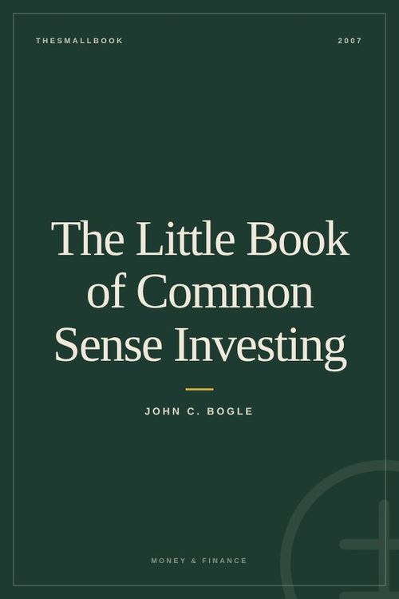

Library › Authors › John C. Bogle
Books by John C. Bogle
John C. Bogle has one book in the library. Every book here is read down to the big idea, the lessons, the lines worth keeping and the actions worth taking. Start with the summary, then buy the full book if it earns a place on your shelf.

The Little Book of Common Sense Investing
2007 · 8 min · 6 lessons
Don't look for the needle in the haystack. Buy the haystack. Costs are the one thing you control - and the one thing that decides everything.
Bogle - founder of Vanguard, inventor of the retail index fund - spends the book proving one arithmetic truth: all investors collectively EARN the market's return, so after costs, the average actively-managed rupee MUST underperform the average indexed rupee (this isn't opinion; it's subtraction - the 'Cost Matters Hypothesis'). The evidence is brutal: most active funds trail their benchmark over any long period; the few winners rarely repeat (past performance genuinely predicts nothing); fund costs - expense...
Lessons in the summary
- The Relentless Arithmetic: Why Average Beats Almost Everyone
- The Tyranny of Compounding Costs
- Stay the Course: The Investor Is the Last Risk
- Asset Allocation and the Telltale Chart: Building the Whole Portfolio
- The Winners' Game: How to Stop Losing in the Market
- The Magic of Compounding: Time in the Market, Not Timing the Market
Lines worth keeping
- Don't look for the needle in the haystack. Just buy the haystack.
- In investing, you get what you don't pay for.
- The stock market is a giant distraction from the business of investing.
Questions John C. Bogle helps answer
Read nearby authors next
- Nassim Nicholas Taleb 4 books
- Morgan Housel 3 books
- Saurabh Mukherjea 3 books
- Tony Robbins 3 books
- Michael Lewis 2 books
- Raghuram Rajan 2 books
- Scott Galloway 2 books
- Abhijit V. Banerjee & Esther Duflo 1 book
Questions John C. Bogle helps answer
Where should I start with John C. Bogle? Start with The Little Book of Common Sense Investing: Don't look for the needle in the haystack. Buy the haystack. Costs are the one thing you control - and the one thing that decides everything.